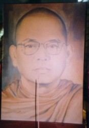
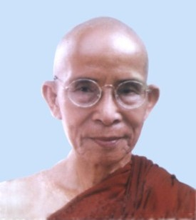
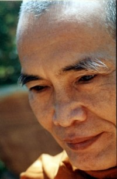
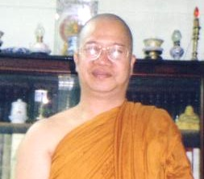

|
BuddhaSasana Home Page |
Vietnamese, with Unicode Times font |
Phật giáo Nam tông ở Cố đô Huế
Tỳ kheo Thiện Minh.
-ooOoo- I. LỊCH SỬ HÌNH THÀNH 1. Niên đại và người khai sáng.Có thể nói là Phật giáo Nam Tông ở Huế bắt đầu bằng việc thành lập chùa Tăng Quang vào năm 1954 do Hoà thượng Hộ Tông và Hoà thượng Giới Nghiêm (trực tiếp là Hoà thượng Giới Nghiêm) chủ trương. Lúc đầu, chùa chỉ là một ngôi nhà lá đơn sơ để Ngài Giới Nghiêm dừng chân tu thiền và dạy đạo cho Phật tử hữu duyên. Nhờ oai lực của Tam Bảo và đức độ của Ngài nên Phật tử phát tâm mua đất để xây chùa cho đức Giới Nghiêm và chư Tăng tu hành. Mãi đến năm 1959, nhờ đức tin trong sạch của Phật tử, chùa Tăng Quang tiến hành trùng tu chánh điện và xây dựng bảo tháp tôn trí Xá lợi Ðức Phật Thích Ca. Ngày lễ khánh thành và kết giới Sìmà có sự chứng minh của Hoà thượng Hộ Tông, Hoà thượng Bửu Chơn và 63 vị Tỳ kheo Phật giáo Nguyên Thủy từ Sài gòn đến dự lễ. Năm 1963, Xá lợi Ðức Phật Thích Ca chính thức được cung thỉnh về tôn thờ tại bảo tháp của chùa Tăng Quang cho đến ngày nay. 2. Nguyên nhân du nhập Hoà thượng Giới Nghiêm xuất gia Sa di năm 1930 tại một ngôi chùa ở làng Bãng Lãng, huyện Hương Trà, thành phố Huế theo truyền thống Phật giáo Bắc tông. Tại cố đô Huế, một ngày nọ đức Giới Nghiêm được trông thấy hình bóng các Sa môn của Phật giáo Nguyên Thủy Lào được Hoàng hậu Từ Cung thỉnh vào Thành Nội tụng kinh đầu năm cầu quốc thái dân an. Hình ảnh những vị tu sĩ Phật giáo Lào là một nhân tố vô cùng tươi đẹp cho đức Giới Nghiêm sau này trở thành một tu sĩ Phật giáo Nguyên Thủy Việt Nam. Sau lần gặp gỡ đó, Ngài có ước nguyện được theo giáo phái giống như những vị tu sĩ Lào có Tam y và Quả bát, mà ở Việt Nam lúc bấy giờ vẫn chưa có. Bởi lẽ trước nay Ngài tu theo những gì thầy tổ dạy, một giáo lý có truyền thống rất lâu đời, chịu ảnh hưởng của Phật giáo Trung Hoa. Khoảng cuối thập niên 30, đức Giới Nghiêm nghe tin ở Sài gòn - Gia Ðịnh có phái đoàn truyền giáo của Phật giáo Nguyên Thủy do người Việt Nam tu tập ở Campuchia mang về. Nghe tin này Ngài rất mừng, dự định là sẽ tìm gặp phái đoàn truyền giáo do Hoà thượng Hộ Tông lãnh đạo; Ngài cho các huynh đệ đồng tu biết chuyện này. Một hôm, Ngài và chín huynh đệ nữa trực chỉ hướng về Sài gòn - Gia Ðịnh để tận mắt nhìn thấy những vị chân tu theo truyền thống của Phật giáo Nguyên Thủy Việt Nam. Ðó là các Ngài Hoà thượng Thiện Luật, Hoà thượng Hộ Tông và Hoà thượng Huệ Nghiêm. Nhìn oai nghi tế hạnh của những vị này, Ngài nhớ đến những tu sĩ Lào mà Ngài trông thấy ở Huế gần mười năm trước. Ôi! Sao lạ thế, trông chẳng khác chút nào, quí Ngài đẹp và thanh tịnh làm sao. Ngài nghĩ thầm: "Ta đã tìm đúng giáo phái mà ta đã mơ tưởng trước đây rồi, vậy ta hãy lập tức hành động". Ngài chấp tay xá chào các vị trong phái đoàn của Hoà thượng Hộ Tông và tự giới thiệu về mình và các huynh đệ của Ngài. Trong buổi gặp gỡ hôm đó Ngài đã trao đổi rất nhiều vấn đề đạo pháp với các vị trong phái đoàn truyền giáo của Hoà thượng Hộ Tông. Hoà thượng Hộ Tông giải đáp cho đức Giới Nghiêm những thắc mắc đã cưu mang trong lòng nhiều năm qua. Hoà thượng Hộ Tông nói: "Những thắc mắc của thầy cũng giống như những thắc mắc của tôi ngày xưa khi chưa gặp Phật giáo Nguyên Thủy". Lời lẽ, đạo hạnh của phái đoàn truyền giáo của Hoà thượng Hộ Tông đã thu hút đức Giới Nghiêm và chín huynh đệ. Ðức Giới Nghiêm tiếp tục hỏi Hoà thượng Thiện Luật: "Chúng tôi muốn tu theo quí Ngài có được không; và thủ tục như thế nào?". - Ðược. Nhưng theo giới luật, thầy phải làm giới tử 3 tháng - Hoà thượng Thiện Luật đáp. Hoà thượng Thiện Luật hỏi các vị trong phái đoàn và trả lời tiếp: - Tốt hơn hết là quí thầy nên sang Campuchia làm giới tử và xuất gia ở đó, vì chúng tôi tu theo đạo Phật Nguyên Thủy không được bao lâu. Nếu quí vị đồng ý, chúng tôi sẽ giới thiệu chùa và bổn sư để quí vị tu học. Ðức Giới Nghiêm trầm tư suy nghĩ trong giây lát và nói: "Vậy xin các Ngài hoan hỷ giới thiệu cho chúng con". Hoà thượng Thiện Luật đáp: "Sàdhu, Sàdhu, Sàdhu". Năm 1944, đức Giới Nghiêm giã từ quê hương. Tuy nhiên, trước ngày đức Giới Nghiêm rời quê hương Việt Nam sang đất nước chùa tháp Campuchia tu học chỉ còn ba huynh đệ thôi; những vị kia còn nặng nợ đời thường nên ở lại Sài gòn - Gia định. Khi sang đến Campuchia tu học chỉ còn lại một mình đức Giới Nghiêm, hai vị kia cũng bùi ngùi chia tay trở về đời thường. Nhìn những huynh đệ ra đi, Ngài rất động tâm và lấy điều đó để tự thức tỉnh cho mình. Trên con đường tu học, dùi mài kinh sách ở đất nước chùa tháp Campuchia, đức Giới Nghiêm tinh tấn không biết mệt mỏi. Kết quả là lúc 20 giờ 20 ngày 08 tháng 3 năm 1947, đức Giới Nghiêm được thầy bổn sư cho thọ đại giới, xuất gia Tỳ kheo theo truyền thống Phật giáo Nguyên Thủy, thầy thế độ là Hoà thượng Visuddhiransì và thầy Yết ma là Candavijìra. Trong thời gian ở Campuchia, Ngài cũng có dịp sang Thái Lan để tu học thêm. Sau 9 năm tu học ở Campuchia và Thái Lan, Ngài quyết định trở về Việt Nam để chia xẻ hương vị pháp bảo với đồng bào trong nước, và hợp tác với các vị trong phái đoàn truyền giáo của Hoà thượng Hộ Tông để thành lập Giáo hội Tăng già Nguyên Thủy Việt Nam. Vì Ngài là người Huế nên muốn đem hương vị pháp bảo này truyền bá trên quê hương của mình, trước là để đền ơn song thân giáo dưỡng, và sau là báo đáp thầy tổ đã nuôi lớn tâm hồn mình. Ðầu tiên, Ngài về thăm cha mẹ, anh em và họ hàng. Ðược biết thân mẫu đã qua đời khi Ngài còn tu học ở xứ người, nhưng gia đình đã không báo tin cho Ngài biết, vì sợ tin buồn đó sẽ chi phối việc học đạo của Ngài; Ngài nén cơn xúc động và giảng cho gia đình nghe về giáo lý vô thường của đạo Phật. Sau đó Ngài ghé thăm một số vị tôn đức Bắc Tông quen biết ngày trước như Ôn Trí Thủ, Ôn Châu Lâm. Gặp lại nhau sau nhiều năm xa cách, các vị hàn huyên tâm sự về đạo pháp thật nhiều. Các vị đã vấn đạo với nhau nhiều ngày đêm. Ðức Giới Nghiêm có viết một quyển sách mỏng kể lại cuộc đối thoại lịch sử này, với nhiều đề tài như Tiểu thừa, Ðại thừa, ăn chay, ăn mặn, v.v... Sau đó Ngài đến thăm chùa Phổ Ðà ở Ðà Nẵng, nơi Ngài được thầy truyền thọ đại giới Tỳ kheo theo truyền thống Bắc Tông. Ở đây, Ngài được mời giảng giáo lý Nguyên Thủy cho Phật tử và chư Tăng Bắc tông. Thời giảng của Ngài giúp cho chư Tăng và Phật tử có cái nhìn đúng đắn về Phật giáo truyền thống. Ðiểm đáng nói là tại chùa Phổ Ðà này, chính là nơi manh nha để hình thành việc ra đời chùa Tam Bảo- Ðà Nẵng năm 1953 - ngôi chùa Phật giáo Nguyên Thủy đầu tiên ở miền Trung. Phật tử thấy đạo mới lạ và phong cách khả kính của đức Giới Nghiêm khiến cho họ tăng thêm lòng tín thành nơi Tam Bảo nên họ rũ nhau đến quy y và học đạo với đức Giới Nghiêm ngày càng đông. Ngoài ra, còn có nhiều vị tu sĩ trong truyền thống Bắc Tông quyết định chuyển sang tu trì theo tông phái Nguyên Thủy của đức Giới Nghiêm, điển hình như Hoà thượng Hộ Nhẫn (Tăng trưởng Phật giáo Nam Tông vừa viên tịch). Nhờ số lượng tín đồ Phật tử ngày càng đông, người xuất gia tu học cũng khá nhiều nên ở đây đã thành lập được chùa Tam Bảo với sự hỗ trợ của Ngài Hộ Tông và Ngài Bửu Chơn v.v... Ðấy cũng là những nhân tố thuận lợi cho việc thành lập thêm chùa Tăng Quang ở Huế sau này. 3. Những điểm thuận lợi và khó khănViệc gì trên đời này để thành công cũng phải có cái giá của nó. Nếu thành công mà không có những khó khăn, trở ngại thì sự thành công ấy sẽ trở nên tầm thường. Việc du nhập luồng tư tưởng Phật giáo Nguyên Thủy vào cố đô Huế của Hoà thượng Giới Nghiêm là cả một quá trình nhiêu khê trong lịch sử hoằng pháp của Phật giáo Nguyên Thủy Việt Nam. Nguyên do là Phật giáo Nguyên Thủy rất xa lạ, mới mẻ đối với cư dân địa phương và có nhiều điểm tu học khá quan trọng tương phản với Phật giáo Bắc tông vốn có nguồn gốc lịch sử, lâu đời trên mảnh đất này. Thế nên Phật giáo Nguyên Thủy truyền bá được trên đất Huế là một thành công lớn của đức Giới Nghiêm. Chúng ta cần tìm hiểu các yếu tố thuận lợi lẫn khó khăn khi Phật giáo Nguyên Thủy được giới thiệu ở cố đô Huế. a) Thuận lợi: - Vì đức Giới Nghiêm là người Huế nên sự hiện diện của Ngài trên làng quê của mình để dạy đạo cho Phật tử và thân bằng quyến thuộc theo giáo pháp Nguyên Thủy thì không có gì trở ngại đối với dân làng và chính quyền địa phương. Họ xem Ngài giống như một vị tiên thánh đã học được phép mầu linh nghiệm gì đó ở xứ người và giờ đây Ngài chia xẻ phép mầu đó cho thân quyến và Phật tử. Họ hoc rất chân thành, niềm tin kiên cố và đạo tâm vững chãi. Niềm tin đó dường như bất di bất dịch với thời gian và không gian. Ðến ngày nay con cháu của họ vẫn còn sắt son một lòng vì đạo, xem đạo Phật Nguyên Thủy như là nguồn suối đạo đức tươi mát không thể thiếu trong gia đình. - Vì đức Giới Nghiêm trước khi xuất gia theo Phật giáo Nguyên Thủy là một vị tỳ kheo của Phật giáo Bắc tông, có thầy tổ và huynh đệ khá đông ở Huế và Ðà Nẵng. Gặp gỡ lại huynh đệ và thầy tổ, mặc dù trong hình thức tông phái khác nhau nhưng các vị tương đối cảm thông cho nhau. Quí Ngài quan niệm vườn hoa chánh pháp phải có trăm sắc nghìn vẻ để tô điểm giáo lý của đức Từ bi, đồng thời khế hợp nhịp nhàng để đáp ứng nhu cầu tín ngưỡng thuộc nhiều căn cơ của đồng bào Phật tử. Nếu như quá cứng nhắc, cục bộ sẽ có nguy cơ làm cho Phật Pháp khô héo, quần chúng Phật tử không thường đến chùa hoặc bỏ đạo theo những tôn giáo khác. Chính nhờ quan niệm phóng khoáng như vậy, chư vị huynh đệ và thầy tổ của đức Giới Nghiêm ít nhiều cũng tạo điều kiện thuận lợi cho Ngài truyền bá Phật giáo Nguyên Thủy tại Huế và Ðà Nẵng. Thể hiện như vậy là không phân biệt tông phái trong đạo Phật, giúp cho người huynh đệ cùng lý tưởng trong ngôi nhà Phật giáo. - Vì đức Giới Nghiêm được sự hỗ trợ tinh thần lẫn vật chất của các vị Hoà thượng trong phái đoàn truyền giáo miền Nam của Hoà thượng Hộ Tông. Ðồng thời lúc bấy giờ Giáo hội Tăng già Nguyên Thủy Việt Nam đã được nhà nước thời ấy công nhận, có pháp lý và pháp quyền. Ðức Giới Nghiêm cũng là thành viên trong Ban Chưởng Quản. - Vì Giáo lý Nguyên Thủy chỉ thẳng những điều thực tế trong cuộc đời với ngôn từ bình dị, dễ hiểu, không dùng nhiều Hán tự. Giáo lý hướng đến tinh thần tự giác, vô ngã, vị tha, lấy nhân quả làm đầu, không chấp nhận mê tín dị đoan. Lại nữa, nhân cách, phương pháp tu tập, nghi lễ của đức Giới Nghiêm và chư Tăng hoàn toàn giản dị nhưng trang nghiêm nên quần chúng rất tín mộ, đến tìm hiểu và học đạo khá đông. b) Khó khăn: - Ðạo Phật Nguyên Thủy rất mới lạ ở Việt Nam nên không thể nào không có sự chống đối mãnh liệt của một số người trong các môn phái bạn cổ truyền vốn chịu ảnh hưởng sâu đậm màu sắc Trung Hoa từ xưa đến nay. - Tình trạng chia cắt đất nước vào năm 1954 làm giới hạn con đường hoằng pháp của đức Giới Nghiêm, ít nhiều cũng ảnh hưởng rất lớn trong việc khai mở đạo Phật Nguyên Thủy tại cố đô Huế. Chính sách kỳ thị tôn giáo dưới chế độ Ngô Ðình Diệm cũng là một yếu tố bất lợi. Mặc dù vậy, đức Giới Nghiêm trong tinh thần Từ bi hỷ xả, thực hiện hạnh nhẫn nại của đạo Phật để khắc phục những khó khăn khi đối diện những thử thách lúc đạo Phật Nguyên Thủy mới chập chững đặt nền tảng trên mảnh đất sông Hương, núi Ngự. Nhờ biện tài khôn khéo; ngoại giao, ứng xử thấu tình đạt lý nên đức Giới Nghiêm đã dễ dàng vượt qua mọi cam go, trở ngại. 4. Ðôi nét về cuôc đời người khai sáng và các vị có công truyền bá.4.a) Tóm tắt tiểu sử đức Giới Nghiêm, người khai sáng Phật giáo Nguyên Thủy tại Huế. Hoà thượng Giới Nghiêm, thế danh Nguyễn Ðình Trấn, sinh ngày 5 tháng 5 năm 1921 tại Giạ Lê thượng, xã Thủy Phương, huyện Hương Thủy, Thành phố Huế. Con của cụ ông Nguyễn Ðình Tải (Hoà thượng Thích Quang Diệu) và cụ bà Huỳnh Thị Thành. Năm 1930, Ngài xuất gia Sa di tại một ngôi chùa thuộc địa phận làng Bãng Lãng, huyện Hương Trà, thành phố Huế. Năm 1940 (Canh Thìn), xuất gia Tỳ kheo tại chùa Phổ Ðà - Ðà Nẵng theo truyền thống Phật giáo Bắc tông. Năm 1947 xuất gia Tỳ kheo ở chùa Sirìsàgara tại Campuchia, Hoà thượng bổn sư là Ngài Visuddhiransì và Ngài Candavijìra là thầy Yết ma theo truyền thống Phật giáo Nguyên Thủy. Hoà thượng Giới Nghiêm viên tịch ngày 13 tháng 7, Giáp Tý, tức ngày 9/8/1984 tại chùa Phật Bảo, hưởng thọ 64 tuổi (theo cách tính Âm lịch Việt Nam). Những điểm đáng lưu ý trong cuộc đời của Hoà thượng - Năm 1953, đức Giới Nghiêm xây dựng chùa Tam Bảo - Ðà Nẵng với ý định làm trụ sở Phật giáo Nguyên Thủy miền Trung. - Năm 1954, Ngài tham dự đại hội kết tập Tam Tạng lần thứ VI tại Miến Ðiện. Sau khi kết thúc đại hội, chư Tăng phái đoàn Việt Nam về nước, còn Ngài xin ở lại tham học thiền quán. Và Ngài là vị Tăng đầu tiên của Phật giáo Nguyên Thuỷ Việt Nam học pháp môn thiền Minh sát tuệ với Hoà thượng thiền sư Mahàsì Sayadaw tại Miến Ðiện. Chư Tăng Ni và Phật tử Việt Nam vẫn còn duy trì tu tập phương pháp này cho đến ngày nay. - Ngài là một trong các vị thuộc phái đoàn truyền giáo của Hoà thượng Hộ Tông đệ đơn xin chính phủ thành lập Giáo hội Tăng Già Nguyên Thủy Việt Nam, và được công nhận vào ngày 18/12/1957. Trụ sở trung ương đặt tại Kỳ Viên tự, số 610 Phan Ðình Phùng, Quận 3, Sài gòn. Năm 1954 - 1959, Ngài cùng một số chư Tăng xây dựng chùa Tăng Quang. Ðây là ngôi Tam Bảo tổ đình Phật giáo Nguyên Thuỷ tại cố đô Huế. - Ngày 29/1/1967, đức Tăng thống Giới Nghiêm và tám thành viên trong Ban chưởng quản GHTGNTVN: Tỳ kheo Tối Thắng, Tỳ kheo Thiện Căn, Tỳ kheo Thiện Quả, Tỳ kheo Pháp Trí, Tỳ kheo Giác Quang, Tỳ kheo Ẩn Lâm, Tỳ kheo Pháp Quang, Tỳ kheo Pháp Lạc - đồng ký tên giữ vững lập trường rút GHTGNTVN ra khỏi GHPGVNTN. Ðây là một quyết định khá phức tạp, gây dư luận và bất ngờ cho các vị lãnh đạo trong Giáo hội Phật giáo Việt Nam Thống Nhất. Sau đó, vào ngày 31/1/1967, cuộc họp bất thường được tổ chức tại trụ sở trung ương Kỳ Viên tự. Thành phần tham dự gồm các vị lãnh đạo của Ban Chưởng quản GHTGNTVN và 16 ký giả báo chí của thủ đô Sài gòn đến phỏng vấn đức Tăng thống về lý do tại sao rút GHTGNTVN ra khỏi GHPGVNTN. Ngài trả lời: - "Nhận thấy có một số vị Tăng kể từ ngày tham gia GHPGVNTN giới luật không trang nghiêm. Rút ra để chỉnh đốn lại. - "Nhận thấy GHTGNTVN bị Phật giáo Bắc tông chèn ép thái quá. Ðiển hình là văn thư của Thượng tọa Huyền Quang gởi các cơ quan công quyền tại miền Trung để ngăn chặn việc xây dựng chùa Huệ Quang ở Bình Ðịnh, thư đề ngày 22/2/1966. Biết được văn thư đó, Giáo hội chúng tôi gởi văn thư đến Viện Tăng thống và Viện Hoá đạo nhờ can thiệp nhưng không thấy lưỡng viện phúc đáp. Do đó Giáo hội Nguyên Thủy chúng tôi quyết định rút ra khỏi GHPGVNTN." Giáo hội Tăng Già Nguyên Thủy Việt Nam thành lập tháng 12/1957 đến ngày gia nhập Giáo hội Phật giáo Việt Nam 1981 có tất cả là 11 nhiệm kỳ Tăng thống. Ðức Giới Nghiêm đã đảm nhiệm chức vụ Tăng thống liên tiếp các nhiệm kỳ 4, 5, 6, 7 (1964 - 1971) và nhiệm kỳ cuối, rồi gia nhập Giáo hội Phật giáo Việt Nam, sau khi nước nhà được thống nhất. Ðây là vị Tăng Thống có uy tín được chư Tăng tín nhiệm lâu nhất trong các vị Tăng Thống của Giáo hội Tăng Già Nguyên Thủy Việt Nam. - Năm 1979, Ngài được Hội Phật giáo yêu nước Tp HCM và nhà nước mời tham gia phái đoàn chư Tăng Việt Nam sang Campuchia để tái truyền giới cho 8 vị sư Campuchia bị Khmer Ðỏ bắt hoàn tục. Ngài là thầy tế độ cho 8 vị đó. Ðây là nghĩa cử tôn giáo có ý nghĩa rất lớn, giúp thắt chặt tình đoàn kết Việt Nam và Campuchia. - Ngày 4/7/1981 Ðại hội đại biểu thống nhất Phật giáo Việt Nam tổ chức tại chùa Quán Sứ, thủ đô Hà Nội, Ngài được cung thỉnh vào Hội đồng Chứng minh và đảm nhiệm chức vụ Phó Chủ tịch Hội Ðồng Trị Sự GHPGVN. - Ðức Giới Nghiêm là vị Tăng trưởng đầu tiên của Hệ phái Phật giáo Nam Tông Việt Nam kể từ ngày GHPGVN ra đời. 4.b) Tóm tắt tiểu sử Hoà thượng Hộ Nhẫn. Hoà thượng thế danh Tôn Thất Thuế, sanh năm 1924 tại thôn Thanh Lương, xã Hương Xuân, huyện Hương Trà, Thành phố Huế. Thân phụ là cụ ông Tôn Thất Tích, thân mẫu là cụ bà Phan Thị Cưỡng. - Năm 1937, Ngài thi đậu bằng Primaire (Tiểu học thời Pháp thuộc). - Năm 1939, Ngài được cụ Tôn Thất Cổn mời làm thư ký Tôn Nhơn Phủ ở Thành Nội Huế. Tại đây, một hôm nọ, Ngài vào thư viện Hoàng gia đọc sách và đọc được quyển "Cuộc đời Ðức Phật Thích Ca"; đó là động cơ đưa Ngài đến với Chánh pháp. - Năm 1942, rời Miếu Ðường Hoàng gia trở về quê xin phép cha mẹ xuất gia. Lúc đầu cha mẹ không đồng ý, quyết liệt không chấp nhận hành động cho là nông nỗi của con. Sau đó biết ý chí con đã quyết, cha mẹ đành im lặng nuốt lệ để con lên đường tìm đạo. Ngôi chùa Ngài đến dừng chân học đạo bước đầu là chùa Cao Minh; chùa này không phải là chùa thuộc truyền thống Phật giáo Bắc tông thời đó. Ở đây Ngài tự tu giống như những đạo sĩ ngày xưa. - Năm 1945, trên đường lánh nạn binh đao (chiến tranh Pháp - Việt) Ngài gặp được chùa Vô Vi; nay là chùa Từ Nghiêm. Ở đây Ngài cũng tiếp tục khổ hạnh tu trì. - Năm 1947, nghe tin ở trong Huế có Ôn Châu Lâm đức độ cao, Ngài tìm đến thọ giáo. Ở đây tu học hơn 2 năm, được Ôn Châu Lâm thương mến, hướng dẫn Ngài học Kinh, Luật, chữ Hán và cho thọ giới Sa di. Khoảng thập niên 50 đức Giới Nghiêm về thăm song thân ở làng Giạ Lê và sau đó có viếng thăm các vị lãnh đạo Phật giáo Huế như Ôn Trúc Lâm, Ôn Từ Ðàm, Ôn Linh Quang; đồng thời đức Giới Nghiêm có ghé thăm Ôn Châu Lâm. Nhờ vậy lần đầu tiên Ngài được nhìn thấy một vị tỳ kheo tu theo truyền thống Phật giáo Nguyên Thủy. Phong cách uy nghi thoát tục của đức Giới Nghiêm đã tạo nên một ấn tượng tốt đẹp và sâu sắc trong tâm tư Ngài. Một định hướng mới cho lý tưởng học Phật ngày một lớn mạnh, thôi thúc. Thế là không bao lâu Ngài lặng lẽ từ giã thầy tổ, huynh đệ và những người thân thương tìm đến đức Giới Nghiêm để xin nhập môn tu hành theo Phật giáo Nguyên Thủy. - Năm 1952, Ngài được Hoà thượng Thiện Luật cho xuất gia Sa di tại Tam Bảo tự (bấy giờ mới chỉ là cái thất lợp lá chia thành 4 phòng). Và cũng trong năm này Ngài được sang Miến Ðiện dự Hội Nghị Phật giáo thế giới lần thứ III; sau đó được ở lại để dự đại hội kết tập Tam Tạng Thánh Ðiển Pàli lần thứ VI tại Rangoon. Vào lúc 9 giờ 30 ngày 29 tháng 12 năm 1955, Ngài được Hoà thượng Pokokku Sayadaw và Hoà thượng Yết ma Nandàvasa cho thọ đại giới tại chùa Sirìmangalà, Miến Ðiện. Những điểm đáng lưu ý trong cuộc đời của Hoà thượng - Mặc dù còn Sa di nhưng được các vị trong phái đoàn Việt Nam cho tháp tùng đến thủ đô Miến Ðiện để tham dự kỳ kết tập kinh điển lần thứ sáu. - Ngài là người Việt Nam thứ hai được học thiền quán Minh sát tuệ với Hoà thượng thiền sư Mahàsì Sayadaw. Khi về Việt Nam Ngài vẫn áp dụng tu hành và hướng dẫn Tăng Ni, Phật tử tu thiền Minh sát tuệ. Từ ngày xuất gia cho đến lúc viên tịch Ngài là vị thiền sư nuôi mạng bằng hạnh trì bình khất thực và chỉ thọ dụng Tam y. Hai pháp môn đầu đà này có hai tác dụng: vừa tu tập cho chính mình vừa nhắc nhở cho Tăng Ni về đời sống thanh cao của hạnh khất thực, tri túc. - Năm 1958, Ngài được Giáo hội đề cử về trụ trì chùa Tăng Quang, Huế. - Năm 1966, Ngài thành lập Thiền Lâm tự và kiến tạo bảo tháp Xá lợi. Ngôi Tam Bảo này tồn tại cho đến ngày hôm nay. - Năm 1998, Ngài được Giáo hội suy tôn vào Hội Ðồng Chứng Minh và đảm nhiệm chức vụ Phó Chủ Tịch HÐTS GHPGVN. Ngài là vị Tăng trưởng đời thứ ba của Phật giáo Nam Tông Việt Nam kể từ ngày thành lập GHPGVN. Tuy hằng ngày người ta chỉ thấy Ngài tham thiền và trì bình khất thực vào buổi sáng; một việc làm bình thường nhưng đối với bậc xuất gia rất hiếm người thực hiện được thường xuyên, do vậy ý nghĩa và ảnh hưởng tốt đẹp do công hạnh này đối với Tăng Ni, Phật tử các giới vô cùng lớn lao. 4.c) Tóm tắt tiểu sử Thượng tọa Viên Minh Thượng tọa thế danh Nguyễn Hữu Tặng, sinh ngày 10/2/1945 tại Ðạo Ðầu, Triệu Phong, QuảngTrị. Thân phụ là cụ ông Nguyễn Hữu Xướng, thân mẫu là cụ bà Pham thị Quy. Xuất gia năm 1964; thọ giới Sa di năm 1964; thọ giới Tỳ kheo lúc 16 giờ 30 ngày 28/11/1965 tại trụ sở trung ương Kỳ Viên tự. Ðức Giới Nghiêm là Hoà thượng bổn sư và là thầy thế độ. Thượng tọa Sirìcando và Thượng tọa Duyên Hạnh là hai vị thầy Yết ma. Những điểm đáng lưu ý - Năm 1973, Thượng tọa đại diện Giáo hội sáng lập chùa Huyền Không ở Lăng Cô, huyện Phú Lộc, tỉnh Thành phố Huế. Ngôi Tam Bảo này là tiền thân của Huyền Không Sơn Thượng, Huyền Không Sơn Trung và Huyền Không Sơn Hạ. - Năm 1976, Thượng tọa là Tổng thư ký Giáo hội Tăng Già Nguyên Thuỷ Việt Nam. - Năm 1976, Thượng tọa trụ trì Kỳ Viên Tự, trụ sở trung ương Giáo hội Tăng Già Nguyên Thuỷ Việt Nam. - Năm1990, Thượng tọa trụ trì Tổ đình Bửu Long. Nơi đây Thượng tọa đào tạo Tăng Ni cho Giáo hội. - Năm 1998, Thượng tọa kiến tạo thêm thiền viện Viên Không, núi Dinh, Bà Rịa - Vũng Tàu. Thượng tọa đã sáng tác một số tác phẩm như sau: Tuyển tập thư Thầy, Con đường Hạnh phúc, Vi Tiếu rất có giá trị và giúp ích cho chư Tăng và Phật tử Việt Nam. 4.d) Thượng tọa Ðịnh Lực Thượng tọa thế danh Vũ Quang Vinh, sinh ngày 24/11/1930 tại Quảng Ngãi. Song thân là cụ ông Vũ Ðình Thư và cụ bà Phạm Thị Ðăng. Xuất gia năm 1972; thọ giới Sa di năm 1972; thọ giới Tỳ kheo vào lúc 10 giờ ngày 5/5/1974 tại Thiền Lâm tự - Huế. Ðức Hộ Nhẫn là Hoà thượng bổn sư và là thầy thế độ, Ðại đức Giới Hỷ là thầy Yết ma. Những điểm đáng lưu ý Từ năm 1979 đến nay Thượng tọa trụ trì tổ đình Tăng Quang, hướng dẫn Tăng Ni và Phật tử tu hành theo Phật giáo Nguyên Thủy. Mặc dù bận Phật sự và tuổi cao sức yếu nhưng Thượng tọa vẫn làm thơ và trước tác một số tác phẩm rất hữu ích: Nguồn sáng vô tận, Cẩm nang y dược, Dẫn lối về nguồn, Hoa đạo, Vườn thơ ý đạo, Tạ từ. Ðặc biệt nhất là quyển "Dẫn lối về nguồn", đây là công trình sưu tập pháp của Thượng tọa sau mấy mươi năm học đạo. Sách trình bày dưới dạng hỏi đáp. Lời văn khúc chiết, gẫy gọn và cô đọng. 4.e) Tóm tắt tiểu sử Thượng tọa Giới Ðức Thượng tọa thế danh Nguyễn Duy Kha sinh ngày 19/7/1944 tại Giạ Lê thượng, Hương Thuỷ, Thành phố Huế. Thân phụ là cụ ông Nguyễn Duy Hoan và thân mẫu là cụ bà Nguyễn Thị Sừng. Xuất gia năm 1973; thọ giới Sa di năm 1973, thọ giới Tỳ kheo lúc 9 giờ 58 phút, ngày 17/2/1977 tại Tam Bảo tự - Ðà Nẵng. Ðức Giới Nghiêm là bổn sư và là Hoà thượng thế độ. Ðại đức Giới Hỷ là thầy Yết ma. Những điểm đáng lưu ý - Thượng tọa là nhà thơ có tên tuổi ở đất thần kinh. Ðã xuất bản nhiều tập thơ: Chèo vỡ sông trăng, Ðá trắng chiêm bao, Lửa lạnh non thiêng, Tình mẹ - mùa báo hiếu, ... - Là nhà văn rất nổi tiếng trong giới Phật giáo; những tác phẩm của Thượng tọa chẳng những có giá trị trong đạo mà còn đóng góp không nhỏ cho nền văn chương của dân tộc Việt Nam như: Người trồng hoa và chàng tu sĩ, Kinh lời vàng (phổ thơ Kinh Pháp cú), Ngàn xưa hương Bối, Một cuộc đời - một ngôi sao, Chuyện cửa thiền, Hành hương tâm linh ... - Từ năm 1976 đến năm 1989, Thượng tọa trụ trì chùa Huyền Không. Trong thời gian này Thượng tọa vận động hiệp hội Schmitz thông qua Phật tử tại Ðức xây cầu Bạch Yến giúp đồng bào địa phương. Ðây là một công tác xã hội vô cùng có ý nghĩa. - Từ năm 1989 đến nay. Thượng tọa trụ trì Huyền Không Sơn Thượng. Tại cơ sở mới này Thượng tọa tiếp tục sáng tác thơ văn và góp phần đào tạo Tăng tài cho Phật giáo Nguyên Thủy Việt Nam. 4.f) Thượng tọa Hộ Tịnh Thượng tọa thế danh Hồ Ngọc Tịnh. Sinh năm 1945 tại Thế Chí tây, Phong Ðiền, Thành phố Huế. Song thân là cụ ông Hồ Ngọc Sách và cụ bà Nguyễn Thị Con. Xuất gia năm 1965; thọ giới Sa di năm 1967; thọ giới Tỳ kheo vào lúc 9 giờ 45 phút ngày 24/6/1979 tại trụ sở trung ương Kỳ Viên tự. Ðức Ẩn Lâm là Hoà thượng thế độ và Thượng tọa Siêu Việt, Thượng tọa Pháp Tuệ là thầy Yết ma. Những điểm đáng lưu ý Hiện nay Thượng tọa là giám tự chùa Thiền Lâm. - Sống chung với Hoà thượng Hộ Nhẫn nhiều năm bằng hạnh ẩn cư thiền định. Do nếp sống độc cư trên núi nên chư Tăng và Phật tử ít biết đến Thượng tọa. Nhưng với đời sống trầm lặng như thế, Thượng tọa đã giới thiệu một bài học vô ngôn, một tấm gương sáng ngời cho thế hệ mai sau. - Mặc dù bệnh tật thường xuyên gây chướng ngại cho bản thân và thích sống trầm lặng, nhưng sau khi Hoà thượng bổn sư (đức Tăng trưởng Hộ Nhẫn) viên tịch, Thượng tọa đã theo lời mời của chư Tăng tại Huế, đứng ra đảm trách Phật sự đa đoan tại Thiền Lâm tự. 4.g) Thượng tọa Pháp Tông Thượng tọa thế danh Nguyễn Văn Thông, sinh ngày 10/3/1957 tại Hải Lăng, Quảng Trị. Song thân là cụ ông Nguyễn Văn Thụy và cụ bà Nguyễn Thị Quyến. Xuất gia năm 1971; thọ giới Sa di năm 1973; thọ giới Tỳ kheo vào lúc 10 giờ, ngày 24/6/1979 tại trụ sở trung ương Kỳ Viên tự. Ðức Ẩn Lâm là Hoà thượng thế độ và Thượng tọa Siêu Việt, Thượng tọa Pháp Tuệ là hai vị thầy Yết ma. Những điểm đáng lưu ý - Từ năm 1989 đến nay là trụ trì chùa Huyền Không - Ngôi Tam Bảo này từ năm 1998 - 2002 là văn phòng của Hệ phái Nam Tông và cũng là nơi đào tạo Tăng tài cho Phật giáo Nguyên Thủy Việt Nam hiện nay. - Tháng 3 năm 1993 Thượng tọa khởi xướng đại trùng tu Phật điện. Nhờ sự hỗ trợ nhiệt thành của Tăng Ni Phật tử xa gần, nhất là sự giúp đỡ của Hoà thượng Pháp Nhẫn, Thượng tọa Viên Minh, sư cô Trí Hạnh nên tới tháng 3 năm 1995 Phật sự viên thành. Lễ khánh thành và kiết giới Sìmà dược tổ chức trọng thể suốt ba ngày dưới sự chứng minh của Hoà thượng Hộ Nhẫn, Hoà thượng Danh Nhưỡng và 56 vị Tỳ kheo Phật giáo Nguyên Thủy. Ngoài ra còn có hơn 80 Tăng Ni Bắc tông, hơn 20 Sa di Nam Tông và trên 1000 Phật tử các giới tham dự. - Thượng tọa là Chánh văn phòng, trợ lý thứ nhất cho Hoà thượng Hộ Nhẫn, Phó chủ Tịch HĐTS - GHPGVN kiêm Tăng trưởng Hệ phái Nam Tông, uỷ viên Ban Trị sự Phật giáo Thành phố Huế, là người tổ chức và điều hành các Phật sự trọng yếu của Phật giáo Nam Tông tại Thành phố Huế. 4.h) Thượng tọa Tuệ Tâm Thượng tọa thế danh Quách Cà, sinh ngày 15/8/1956 tại khu phố Phú Hiệp, thành phố Huế. Song thân là cụ ông Quách Sỏ và cụ bà Trần Thị Cháu. Xuất gia năm 1974; thọ giới Sa di năm 1974; thọ giới Tỳ kheo vào lúc 10 giờ 15 phút, ngày 24/6/1979 tại trụ sở trung ương Kỳ Viên tự. Ðức Ẩn Lâm là Hoà thượng thế độ và Thượng tọa Siêu Việt, Thượng tọa Pháp Tuệ là hai vị thầy Yết ma. Những điểm đáng lưu ý - Thượng tọa là uỷ viên Ban trị sự tỉnh hội Phật giáo Thành phố Huế. - Mặc dù là nhà sư Nam Tông nhưng Thượng tọa vẫn tham gia rất tích cực trong Tuệ Tĩnh đường Diệu Ðế. Bàn tay của Thượng tọa đã cứu giúp biết bao nhiêu bệnh nhân khỏi chứng bệnh hiểm nghèo. Tuy là thầy thuốc nhưng Thượng tọa đã khéo léo truyền bá giáo lý của nhà Phật bằng con đường chữa bệnh cứu người hiện thực và hữu hiệu. Rất nhiều Phật tử ở những tôn giáo khác đã biết được Phật giáo Nguyên Thủy qua những lần gặp gỡ Thượng tọa bắt mạch và hốt thuốc. 4.i) Tóm tắt tiểu sử Ðại đức Giới Hỷ Ðại đức thế danh Nguyễn Tấn Bạn, sinh ngày 16/7/1941 tại Bình Ðào, Thăng Bình, Quảng Nam. Thọ giới Tỳ kheo lần đầu lúc 18 giờ ngày 15/3/1963 tại chùa Tam Bảo - Ðà Nẵng. Hoà thượng Giới Nghiêm là bổn sư và là thầy thế độ, Thượng tọa Hộ Giác và Thượng tọa Dũng Chí là hai vị thầy Yết ma. Những điểm đáng lưu ý - Thập niên 60, Ðại đức đại diện Giáo hội để hoằng pháp tại chùa Tăng Quang. Ở đây ngoài việc hướng dẫn Tăng Ni, Phật tử tu hành theo giáo lý Nguyên thuỷ, Ðại đức còn tích cực hoạt động từ thiện xã hội như: giúp đỡ những người già neo đơn, cứu trợ đồng bào bị thiên tai lũ lụt. - Ðại đức có công đại trùng tu ngôi chánh điện Tăng Quang tự và kiến tạo Bảo tháp tôn thờ Xá lợi đức Phật Thích Ca, xây dựng một trường Bồ Ðề cho học sinh cấp I. - Mặc dù là tu sĩ nhưng Ðại đức cũng tham gia hoạt động cách mạng. - Ðại đức làm thầy Yết ma cho nhiều vị sư của Phật giáo Nguyên Thủy Việt Nam. - Vì hoàn cảnh gia đình và cuộc sống, năm 1979 Ðại đức hoàn tục; và năm 1996 xuất gia trở lại. Hiện nay Ðại đức là phó ban đại diện huyện và uỷ viên Ban trị sự tỉnh Quảng Nam kiêm trụ trì chùa Giác Viên. Ngoài ra còn có rất nhiều vị Tăng đóng góp công sức cho Phật giáo Nguyên Thuỷ ở Huế từ giai đoạn hình thành đến phát triển, nhưng không được đề cập đến là vì không có sự liên tục. Có rất nhiều vị xuất thân từ Huế nhưng khi trưởng thành thì định cư ở hải ngoại hoặc các tỉnh khác như Ðồng Nai, Sài gòn. Ðiều đó rất hay nhưng nếu tất cả đều như vậy thì Phật giáo Nam Tông ở Huế sẽ đi về đâu? Ðiển hình như Phật giáo Nam Tông ở Quảng Ngãi, Ðà Lạt, Nha Trang. Ðiều đáng trân trọng là những vị Hoà thượng, Thượng tọa có tên ở trên gắn bó rất mật thiết với Phật giáo Nguyên Thủy tại Huế. Nhờ sự hiện diện của các vị này nên Phật giáo Nguyên Thủy có thế đứng vững chãi và tương đối có tầm cỡ tại thành phố Huế. 5. Những Thiện Nam Và Tín Nữ Hộ Trì Tam Bảo Ðầu Tiên Thiện nam và tín nữ là hai thành phần quan trọng của hàng Tứ chúng trong Phật giáo. Ðạo Phật được truyền bá sâu rộng hay không là nhờ sự hỗ trợ của hai thành phần này. Nếu thiếu hai thành phần thì chẳng khác nào ao sen ở giữa rừng hoang, không có người thưởng thức. Do đó việc du nhập Phật giáo Nguyên Thủy vào cố đô Huế được thành công là do công đức rất lớn của những thiện nam và tín nữ hộ trì Tam Bảo đầu tiên để đức Giới Nghiêm hoàn thành sứ mạng thiêng liêng cao cả của mình đối với Phật giáo Nguyên Thủy tại đất thần kinh. Trong số thiện nam và tín nữ đầu tiên hộ trì Tam Bảo của Phật giáo Nguyên Thủy tại Huế có ông Nguyễn Thiện Ðông và bà Nguyễn Thị Cúc. Hai ông bà này rất giàu có ở Huế lúc bấy giờ. Khi gặp đức Giới Nghiêm, nghe Ngài giảng về Phật Pháp, hai ông bà chiêm nghiệm về cuộc đời mình đã trải qua: lúc thăng, lúc trầm, buồn vui lẫn lộn của kiếp nhân sinh. Hai người nhận rõ được yếu tố vô thường tạm bợ của thế gian và tự thực chứng lời dạy của Ðức Phật ngày xưa mà ngày nay đức Giới Nghiêm giảng dạy lại cho mình, sao quá gần gũi, thực tế, sống động nên đã đánh thức nỗi niềm tâm tư của ông bà. Từ đó, hai ông bà tự phát tâm tín thành Tam Bảo và nguyện trọn đời quy y và hộ trì Tam Bảo. Lúc bấy giờ, ở Huế có Tăng mà không có Tự, nên ông Thiện Ðông và bà Cúc xin phép đức Giới Nghiêm cho thành lập một ngôi chùa Phật giáo Nguyên Thủy ở Huế để chư Tăng có nơi tu hành và Phật tử có nơi lễ bái cúng dường. Ðức Giới Nghiêm nhận thấy lời đề nghị của ông Thiện Ðông và bà Cúc rất hay và hợp thời nên đồng ý chấp nhận. Kể từ hôm ấy, ông Thiện Ðông và bà Cúc đứng ra vận động tài chánh của bà con thân thuộc và bạn hữu của mình để mua căn nha số 1/1 đường Võ Tánh, Huế và thành lập ngôi chùa đầu tiên của Phật giáo Nguyên Thủy tại Huế, tức chùa Tăng Quang ngày nay. Khi chùa thành lập xong, đức Giới Nghiêm muốn Phật giáo Nguyên Thủy phát triển mạnh mẽ nên chỉ thị Ðại đức Giới Hỷ thành lập Ban quản trị chùa Tăng Quang để hàng cư sĩ có đủ pháp lý cùng chư Tăng hộ trì Tam Bảo và hoằng dương Chánh Pháp. Từ đó, ông Sắc, ông Ðinh và ông cụ Ðồng thay phiên nhau làm Chánh và Phó hội trưởng. Ðồng thời trong chiều hướng phát triển, những Phật tử có đức tin kiên cố của chùa Tăng Quang như: bà Thông Lang, ông bà Tùng, ông bà Bê, chú Tuyên, chú Tề, ông bà Mãi, bà Cháu, cô Bảy, bà Phúc, bà Nghè Hai, cô Lớn v.v... và thường trực đến hỗ trợ chùa Tăng Quang và tiếp tay với Ðại đức Giới Hỷ đại trùng tu ngôi chánh điện; kiến tạo thêm một bảo tháp để tôn thờ Xá lợi và xây một dãy trường Bồ Ðề cho học sinh cấp I. Chính nhờ Thiện nam Nguyễn Thiện Ðông và Tín nữ Nguyễn Thị Cúc và quí ông bà có tên vừa nêu trên làm nền móng vững chắc mà chùa Tăng Quang được kiến tạo nên. Và chính nhờ cơ sở đó, Phật giáo Nguyên Thủy có nơi bám trụ và phát triển cho đến ngày hôm nay tại Thành phố Huế. -ooOoo- |
Chân thành cám ơn Tỳ kheo Thiện Minh đã gửi tặng bản vi tính (Bình Anson, 02-2003)
[Trở
về trang PGNT]
last updated: 102-02-2004